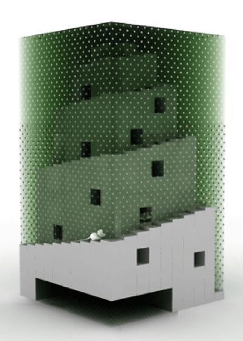

|
 Emerging Forms Research Group – RASTER Vladimir Todorovic, Goran Andrejin, Damien Lock TRANSCODED NATURE _THE ORIGIN OF ORDER is the first in series of projects, which observe movements and changes of transcodabilities in nature. Transcoding is not observed as a change in a code or a format, but as a change of the whole through the order of the transformed code. While trying to address and frame those data metamorphoses, this project results in intentionally formal outcomes. Manifestations and forms are aiming for monumentality, formalism, and unquestionable transcodability. The effect often includes conceptualized and contextualized reactions to the previous data mutations. The first project in this series analyzes the origin of the order by transcoding the signals from a semi-eco system, or an eco simulation, in which rodents live and play. In this environment, some data from the physical space are shared with the data from a computer game and then transcoded into sound output.
To define the origins of the order, there are few types questioned: - Order as something opposed to chaos; stability, everything in place
- Order as a rank or subclass of species,
- Order as a political, social, religion based, and economical system,
- Order as a set of regulations and laws which rules are obeyed,
- Order as an authoritative direction or a command. TRANSCODED NATURE _THE ORIGIN OF ORDER is a project that creates and simulates situations which could depict and bring to life the discovery of the order. It is an interdisciplinary exploration of the emerging environments for inter-species communication in gaming. It is aimed towards the configuring of new beneficial relationships, progressions, and evolutions. This gaming system consists of a physical space where two rodents are placed in a plastic box: this works like a commoditization of a comfortable pet house. Their positions and movements, as well as the terrain, are depicted in a computer game, enabling visitors to directly engage with the system. While being in the computer environment, players are searching for the game bots/rodents players, which are both in the physical and computer space. When they get close to each other, various conditions occur. The sound will be determined by analyzing distances between the players, but at the same time will (in) directly affect them. In all of these interchanges between the various data types, communication plays a very important role. When the communicational transcoding occurs, all of the relationships between species and their languages form an order. This order acknowledges, cancels out and also balances things. It sets a new code, which could result in an infinitely transcoded order. |